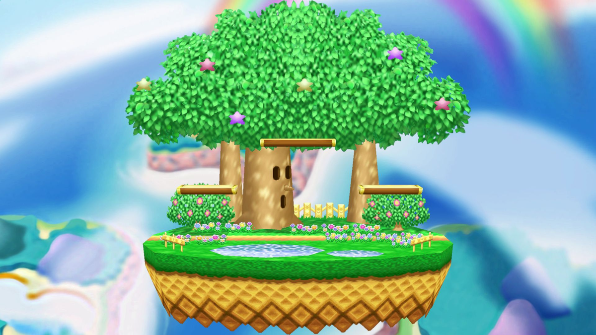
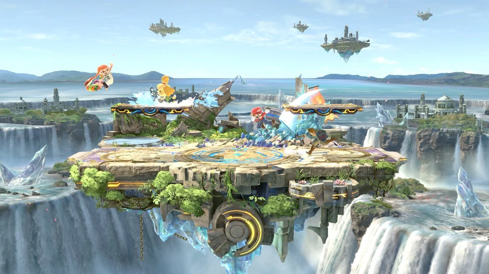

I. Platform-Fighting-Game
Definition
Platform fighter is a video game subgenre of fighting games that cover games that emphasize fighting on stages with free 2D movement, similar to a platform game. The "Platform" part acknowledges the platformer-like freedom of movement and potential stage design. "Fighter" nods towards competitive fighting games between human players in general.
Famous Games
-

Super Smash Bros. Series
-

Brawlhalla
II. Gameplay Mechanics
In platform fighting games, matches occur on a flat surface with floating platforms for players to use strategically. Players can move freely in various directions, jump, double jump, or even fly. Victory conditions vary, such as depleting an opponent's health, knocking them off the stage, or earning the most points. Most games in this genre, inspired by Super Smash Bros, use a damage percentage system to show how far a player will be pushed when attacked, aiming to send them out of the stage boundaries.
-

A Stage from Brawlhalla
-

A Stage from Super Smash Bros 64
-

A Stage from Super Smash Bros Ultimate
III. Character Design
Character Silhouette
The silhouette of the character is their shape and outline. It can help to convey their personality, abilities, and role in the game. A good character silhouette should be distinctive, recognizable, and expressive.
Character Moveset
This is the set of attacks and abilities that a character can use in combat. A good character moveset should be balanced, diverse, and fun to use.
Character Customization
This is the feature that allows players to change the appearance and/or abilities of a character. A good character customization should be flexible, creative, and rewarding. For example, some games have characters with different skins, colors, and weapons that players can unlock and choose.
-

Different Skins for the same Character in Super Smash Bros
IV. Graphics and Animation
Animations
Animations are important for a good fighting game. So every character should have an idle, jump and animations for every attack. The animation is the foundation to your fighting game and the visual effects, sound effects, hitpause, camera effects, and other game feel additions are the dressing.
Graphics
In the last years the graphics of platform fighting games became better and more graphically impressive. It is important that the characters are easily recognizable. So characters should be different from the background.
V. Multiplayer and Online Features
In platform fighting games you can play against 1 or more other players.
Lobbies and Rooms:
Customizable Rooms: Players can create or join customizable rooms where they can set specific rules, such as match type, stage selection, and other gameplay modifiers. Private Lobbies: Friends or specific players can be invited to join private lobbies, allowing for a more personalized and controlled multiplayer experience.
Lobby creation in Super Smash Flash 2
VI. Sound and Music
Soundeffects
In a Platform-Fighting-Game, sound effects play a crucial role in enhancing the overall gaming experience and providing feedback to players.
Examples for Soundeffects:
- Character Movements
- Attacks
- Hits and Damages
- Projectiles and Weapons
Music
In Platform-Fighting-Games, music enhances the fast-paced action with energetic tunes that adapt to gameplay dynamics. Stages have custom background tracks, and characters boast unique victory music upon winning.
VII. Game Balance and Updates
Why Balance Games?
Balancing characters is tough because developers want to keep the character feeling the same even after changes. Characters usually get either a nerf (making them weaker) or a buff (making them stronger). Completely redoing a character is rare because it means starting from scratch, not just tweaking values like damage.
The pros and cons of characters
n a fair fighting game, characters have different strengths and weaknesses. It's important that each character wins and loses an equal number of matchups to maintain balance. Developers use matchups to check if a character is generally better or worse than others.
Metas
Metas, the strongest strategies in fighting games, evolve rapidly due to constant developer balancing. In older, unupdateable games, players exploiting Metas can be frustrating for opponents. Presently, annoying Metas persist, like "spam" characters in games such as Brawlhalla, where repetitive attacks can overwhelm opponents with limited counterplay.
-

A Tierlist of playable Characters from Brawlhalla
-

A Tierlist of Weapons from Brawlhalla
Challenges of balancing characters
It's tricky to make adjustments to a character's abilities without losing what makes them unique. Some characters are supposed to feel very slow but heavy-hitting, but completely changing that would require a rework of the character, which would be a lot of work and make fans of the characters mad. Developers often face difficulties in finding the right balance to keep each character interesting and fair.
VIII. Accessibility
Accessibility in platform-fighting games refers to the design and implementation of features that make the game more inclusive and playable for a wider range of players, including those with various disabilities or limitations.
Customizable Controls:
Allow players to customize controls to suit their preferences and needs. This includes remapping buttons and adjusting sensitivity to accommodate different input devices.
Input Options:
Support various input devices such as controllers, keyboards, and adaptive controllers. This ensures that players can choose the input method that works best for them.
Colorblind Modes:
Implement colorblind-friendly options to make the game's visuals more accessible for players with color vision deficiencies. This may involve using distinct symbols or patterns in addition to colors.

Different colorblind modes
Difficulty Settings:
Implement adjustable difficulty settings to cater to players with varying skill levels. This can include reducing the speed of the game, adjusting AI behavior, or providing invincibility options.
Tutorial and Training Modes:
Create comprehensive tutorial and training modes with step-by-step instructions. This assists players, including those with cognitive disabilities, in learning the game mechanics.
Accessible Menus:
Design menus with clear navigation, and ensure they are accessible with screen readers. Use high contrast, large fonts, and simple layouts to improve overall readability.
IX. Learning Curve
The learning curve can vary on each game, but there are common elements that are typically present.

Example of a learning curve
Basic Controls:
New players start by learning the basic controls, such as movement, jumping, and basic attacks.
Character Familiarization:
Each character in a platform fighting game usually has a unique set of moves and abilities. Players need to spend time familiarizing themselves with the strengths, weaknesses, and playstyle of their chosen character.
Combos and Strings:
As players become more experienced, they learn to string together combinations of attacks into effective combos. Understanding the properties of each attack, like startup frames, active frames, and endlag, becomes important.
Advanced Techniques:
Many platform fighters feature advanced techniques that skilled players can exploit. These may include wavedashing, short hops, L-canceling, and others. Mastering these techniques can give players a significant advantage and enhance their overall gameplay.
Matchup Knowledge:
Understanding the matchups against different characters is crucial. This involves knowing the strengths and weaknesses of your character against others. Players learn specific strategies and approaches for dealing with different opponents.

Lines represent left-side characters, numbers in squares show their chances of winning against the character above.
Mind Games and Adaptation:
As players reach higher skill levels, the game becomes more about mind games, predictions, and adaptability. Reading opponents, understanding their habits, and adapting strategies during a match become key components of success.
Stage Awareness:
The stages in platform fighters often have unique layouts and features. Understanding how to use the stage to your advantage and being aware of its hazards is essential.
Continuous Improvement:
The learning curve in platform fighting games is ongoing. Even top players continue to refine their skills, adapt to changes in the meta, and discover new strategies.